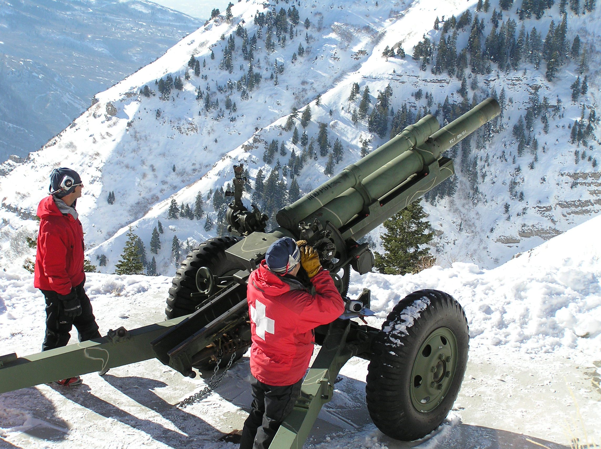

Lab 6: Realistic Projectile Motion Simulation#
Introduction#
Projectile motion is a classical problem in physics, often simplified by assuming a constant acceleration due to gravity and ignoring the effects of air resistance. However, in realistic scenarios such as the flight of a shell from a howitzer, these simplifications are inadequate. Air drag significantly affects the trajectory, and at high altitudes, the variation of air density with height further modifies the motion.
In this lab, we will simulate projectile motion in three stages:
Ideal Projectile Motion — without air drag, assuming constant gravitational acceleration.
Projectile Motion with Air Drag — including drag force proportional to the square of velocity.
Projectile Motion with Variable Atmospheric Density — including drag with a density that decreases exponentially with altitude.
The goal is to demonstrate how increasingly realistic assumptions change the trajectory, and to practice numerical integration of Newton’s laws using a finite difference method.
Explosive cannon shells launched from a small howitzer is a common tool to prevent avalanche danger by intentionally triggering smaller avalanches in areas prone to serious avalanche danger.

Obviously, it is of great interest to make sure the cannon shell hits the target area. In fact, Utah is a dangeorus place to live: Shell shocked: Errant avalanche bomb rips Pleasant Grove home
Theory and Model#
Newton’s Second Law#
In two dimensions, Newton’s second law for a projectile of mass \(m\) can be written as:
where \(\vec{r} = (x, y)\) is the position.
1. No Air Drag#
For the simplest case (no drag):
Horizontal direction:
Vertical direction:
with \(g\) the gravitational acceleration.
2. With Air Drag#
The drag force for high-speed objects is approximated as quadratic in velocity:
where:
\(C_d\) = drag coefficient (dimensionless),
\(\rho\) = air density (kg/m³),
\(A\) = cross-sectional area of projectile (m²),
\(v = |\vec{v}|\) = speed of projectile.
Thus, the equations of motion become:
3. With Variable Air Density#
At higher altitudes, air density decreases approximately exponentially:
where:
\(\rho_0\) = air density at sea level,
\(H\) = scale height of the atmosphere (about 8000 m).
Substituting into the drag force:
Numerical Method#
We will solve the equations by converting the second-order differential equations into first-order form.
Define:
Position: \(\vec{r} = (x, y)\)
Velocity: \(\vec{v} = (v_x, v_y)\)
Acceleration: \(\vec{a} = (a_x, a_y)\)
Then:
These can be solved using a finite difference method (Euler’s method):
Methodology#
Common Initial Conditions
Use the same launch speed for all runs,\[ v_0 = 875~\text{m/s}, \]and three launch angles,
\[ \theta \in \{30^\circ,\;45^\circ,\;60^\circ\}. \]For each chosen \(\theta\), compute initial velocity components
\[ v_{x,0} = v_0\cos\theta,\qquad v_{y,0} = v_0\sin\theta, \]with initial position \(x_0=0,\; y_0=0\).
Numerical Integration (Euler – first-order finite difference)
Advance state \((x,y,v_x,v_y)\) with a fixed time step \(\Delta t\) using\[ x_{n+1}=x_n+v_{x,n}\,\Delta t,\qquad y_{n+1}=y_n+v_{y,n}\,\Delta t, \]\[ v_{x,n+1}=v_{x,n}+a_x(v_{x,n},v_{y,n},y_n)\,\Delta t,\qquad v_{y,n+1}=v_{y,n}+a_y(v_{x,n},v_{y,n},y_n)\,\Delta t, \]where \(a_x,\;a_y\) depend on the modeling case (below). Choose \(\Delta t\) small enough to give smooth, stable trajectories (e.g., \(\Delta t\!\sim\!10^{-3}\text{–}10^{-2}\ \text{s}\) as a starting point).
Three Modeling Cases (run all three for each angle)
Case 1 — No Drag
\[ a_x=0,\qquad a_y=-g. \]Case 2 — Quadratic Drag, Constant Density \(\rho_0\)
With \(v=\sqrt{v_x^2+v_y^2}\) and parameters \(C_d,\;A,\;m\),\[ a_x=-\frac{1}{2m}C_d\rho_0 A\,v\,v_x,\qquad a_y=-g-\frac{1}{2m}C_d\rho_0 A\,v\,v_y. \]Case 3 — Quadratic Drag, Exponential Atmosphere
With \(\rho(y)=\rho_0 e^{-y/H}\),\[ a_x=-\frac{1}{2m}C_d\rho_0 e^{-y/H}A\,v\,v_x,\qquad a_y=-g-\frac{1}{2m}C_d\rho_0 e^{-y/H}A\,v\,v_y. \]
Stopping Criterion & Range Extraction
For each run, integrate until the projectile returns to the ground (\(y\le 0\) with \(v_y<0\)). To improve range accuracy, linearly interpolate the last step to estimate the impact \(x\) where \(y=0\).What to Produce for Each Angle \(\theta\in\{30^\circ,45^\circ,60^\circ\}\)
Plot trajectories \(y(x)\) for all launch angles on one plot. Do this for each case.
Print time of flight \(T\), horizontal range \(R\), peak height \(y_{\max}\), and impact speed \(v_{\text{impact}}\) for each launch angle and case.
Learning Objectives#
By the end of this lab, we will be able to:
Translate Newton’s second law into coupled first-order differential equations.
Implement a numerical method (Euler’s method) to solve projectile motion.
Compare idealized and realistic projectile trajectories.
Understand the impact of air drag and atmospheric density on real-world ballistics.
Template Code#
import numpy as np
import matplotlib.pyplot as plt
# ---------------------------------------------
# Projectile Motion Simulation
# ---------------------------------------------
# Parameters
g = 9.81 # gravitational acceleration (m/s^2)
v0 = 875.0 # initial launch speed (m/s)
angles = [30, 45, 60] # launch angles in degrees
dt = 0.01 # time step (s)
# Function to simulate trajectory without drag
def simulate(v0, theta_deg, dt):
theta = np.radians(theta_deg)
# Initial conditions
x, y = 0.0, 0.0
vx = v0 * np.cos(theta)
vy = v0 * np.sin(theta)
# Lists to store trajectory
X, Y = [x], [y]
t = 0.0
# Track values
ymax = y
flight_time = 0.0
impact_x = None
# Integrate until projectile hits ground
while y >= 0:
# update accelerations here
# Update positions here
# Update velocities here
# Update time here
# Track max height
if y > ymax:
ymax = y
# Store trajectory
X.append(x)
Y.append(y)
# Interpolate last step for more accurate range and flight time
x_last, y_last = X[-2], Y[-2]
x_impact, y_impact = X[-1], Y[-1]
frac = y_last / (y_last - y_impact) # fraction between last two points where y=0
impact_x = x_last + frac * (x_impact - x_last)
flight_time = t - dt + frac * dt
# Impact speed
vy_impact = vy # last velocity update corresponds to just after passing ground
v_impact = np.sqrt(vx**2 + vy_impact**2)
return np.array(X), np.array(Y), flight_time, impact_x, ymax, v_impact
for theta in angles:
X, Y, T, R, Ymax, Vimpact = simulate(v0, theta, dt)
plt.plot(X, Y, label=f"{theta}°")
print(f"Angle {theta}°:")
print(f" Flight time: {T:.2f} s")
print(f" Range: {R/1000:.2f} km")
print(f" Max height: {Ymax/1000:.2f} km")
print(f" Impact speed: {Vimpact:.2f} m/s\n")
plt.title("Projectile Motion (No Air Drag)")
plt.xlabel("Horizontal Distance x (m)")
plt.ylabel("Vertical Distance y (m)")
plt.legend()
plt.grid(True)
plt.show()